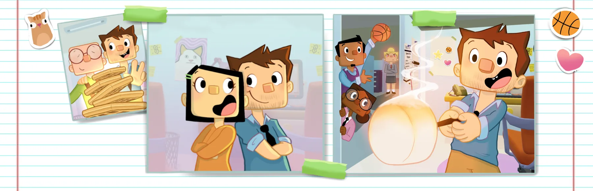
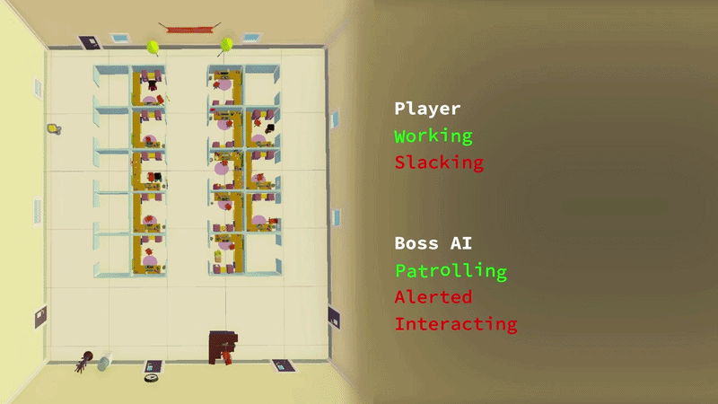

Hardly Workin’

Trailer
Hardly Workin’ is a goofy office simulator game where you play as Buddy Inepta, a supreme slacker. You balance your work and fun in a goofy and chaotic office and have to avoid falling asleep on the job by slacking off. Just don’t get caught by the BIG BOSS Karen…
My Role
I was the Team Lead and a Generalist Programmer on Hardly Workin’, working across gameplay systems, AI, animation, and production management for a 7-person capstone team.
- Managed agile-style production, including sprint planning, task tracking, and weekly team check-ins
- Helped keep development priorities aligned across programming, art, and design
- Built the AI for the office coworkers using finite state machines. Each NPC has their own daily schedule, personality, favourite places to ponder, and preferences for when and how much they chat with you
- Built the Boss on top of that system, adding patrol and detection so you can feel her presence and get wary around her
- Built a conversation tree system for NPC questionnaires
- Contributed to UI systems including menus and HUD implementation
- Integrated animation systems, VFX, and audio to support gameplay feedback and readability
Challenges
Giving Every Coworker a Personality
When implementing the coworker NPCs, I failed to pre-plan the FSM appropriately. This resulted in each NPC feeling robotic and totally disrupted their intended unique personalities. I realized that the office needed to feel alive, and every coworker needed their own personality. I took a step back and planned out how I would approach rebuilding the system, which ultimately led to a more modular system where I could reuse different parts, enabling the ability to manage their daily schedule, their favourite spots to ponder, and when and how much they like to chat with you.

Making the Boss Feel Threatening
For Karen, I built her off the same FSM I used for the NPCs to save time. Of course, she did need additional functionality. Because of my initial rework of the Coworker NPCs, I was able to build on that same system and added patrol and detection, so you can feel her presence in the office and get wary when she’s around. Her heels clicking on the ground was a great touch because they let you know exactly when she would be approaching. Because everything is built from states, the behaviour was ultimately easier to tune and expand.
A Questionable Conversation Tree
For the NPC questionnaire system I built, I also failed to properly pre-plan that system (Sensing a theme here?). This resulted in the conversations feeling clunky and responses feeling unnatural. I worked with our script writer to revise the design so we had branching conversational paths, which allowed for more interesting questionnaires. I made use of Unity's scriptable objects to keep all of this design data driven, that way our script writer could make easy changes on the fly. Revisiting that design philosophy really helped our team out for the better.
Maintaining Scope and Development Focus
As the Team Lead, it was also my job to ensure our team stayed focused. Balancing this alongside programming was a big task. I managed this by ensuring I checked in every day with each department and knew exactly what was working and what they were struggling with so I knew how to gauge expectations accordingly.
I also made sure everyone felt capable to speak up when they had an idea or opinion, while also maintaining clear development expectations. This helped keep development stable while still allowing room for iteration and polish.